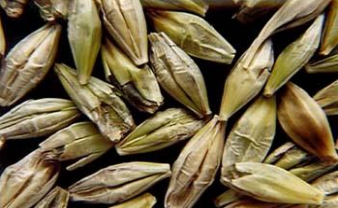

BASE DE COMERCIALIZCIÓN CEBADA CERVECERA

ESTANDAR DE COMERCIALIZCIÓN CEBADA FORRAJERA

Todos aquellos granos o pedazos de granos que presentan alteraciones sustancial en su constitución. Se consideran como tales a los brotados, verdes, ardidos y/o dañados por calor, calcinados, roídos por isoca y roídos en su germen.
Son aquellos que presentan una coloración verde intensa debido a inmadurez fisiológica.
Son aquellos carcomidos por larvas de insectos que atacan el cerreal en planta y cuya parte afectada se presenta negruzca o sucia.
Son aquellos en los que se ha iniciado el proceso de germinación. Tal hecho se manifiesta por la visualización del brote y/o raicillas.

Son aquellos granos o pedazos de granos que presentan un oscurecimiento en su tonalidad natural, debido a un proceso fermentativo o a la acción de elevadas temperaturas.
Todos aquellos granos que tienen un tercio o más del tegumento removido, o que haya desaparecido total o parcialmente sobre el germen.

Es toda porción de grano de cebada cualquiera sea su tamaño.